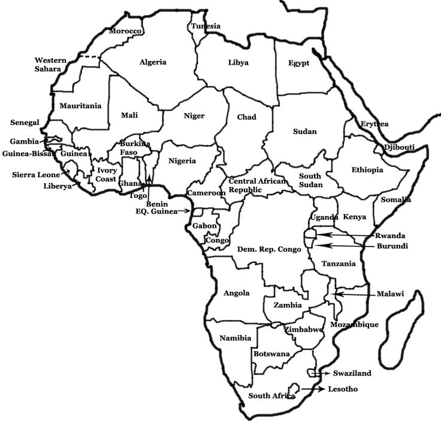

TraceMine.ai
HOME
MAP
FOCUS LOCATIONS
STORIES & REPORTS
3D MODELS
COMMUNITY VOICES
Interactive Mining Impact Map
Explore mining locations and their environmental impact across Africa
☰
Layers
Mining Sites
Water Bodies
Pollution Heatmap
Satellite View
Filters
Select Mineral Type
Gold
Copper
Cobalt
Diamond
Select Region
DRC
Zambia
Ghana
South Africa
Impact Level
High Impact
Medium Impact
Low Impact
